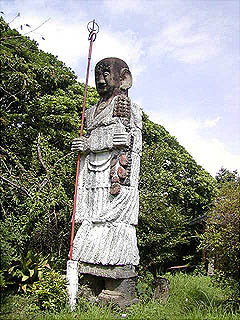

高鍋大師その2/宮崎県高鍋町
スサノオノミコト辺りから見た本堂前の庭の遠望。
石像が林立している様は、その異質な姿とは裏腹にやけに風景に馴染んでいる。まるで大地からにゅきにょきと生えて来た奇妙な土筆のようだ。
ここで位置関係を整理しておこう。下写真の右手にある建物が本堂である大師堂。この二つの建物の前に庭があり、様々な石像が並んでいるという訳。で、先程紹介して来た鳥居のある庭はこの本堂の右手に位置している。
で、早速本堂に入ってみる。
ぎゃっ。
ある程度想像はしていたが、ここも岩岡氏製作のオリジナル石仏が並んでいた。
これらの石像を見ていると岩岡氏の果てしない製作意欲に圧倒される。彫っても彫ってもまだ彫りたい、そんな飽く事なき追求心がこれだけたくさんの石像を生み出したのだろう。
大木の切り株を使用したアンフォルメルな木魚は赤い模様が施され、どこか原始宗教の香りさえ感じる。
欄間には幾つか写真が掲げられていた。
左は先程あった「明治百年」神像の落成記念写真。岩岡氏を慕う大勢の信徒が集まっての集合写真。中央に岩岡氏の姿が見える。
右は「ぎょうば」にて修行中の岩岡氏。石像群からは想像出来ない程の穏やかな顔付きの人物である。
また、本堂の一画には生前岩岡氏が製作に使用した道具が並べられていた。まるでそれ自体が信仰の対象であるかのように。
ここは真言宗の寺というよりも岩岡教の寺といったほうが良いのかも知れない。
もっとも当の岩岡氏にしたって、信仰と製作というものはほぼ同じ意味だったに違いない。
本堂の右横には「ぎょうば」の入口がある。ちょっと見ただけでは判らないが、トタン板の隙間から中を覗いてみると・・・
かなり本格的な手堀り洞窟であった事が伺える。これ以上先は崩落の危険があるとの事で行きませんでした。
本堂の左側の建物は外見こそ普通の建物だが中はこんな感じ。
床柱は枝の先を落しただけ、天井は細い枝や蔓を縒ったものを交差させたもの。
全体としては凄く有機的なモワモワした感じに仕上がっている。これは手抜きなのではなく、いやホントは手抜きなのかもしれないが、結果的には製材してカッチリ作った建物より遥かに個性的で印象的な室内に仕上がっているのだ。このように岩岡ワールドの激しいオリジナリティは木の製材とか石の大割りという途中の行程を省く事によって生まれて来ているのだ。
さて、いよいよ本堂前の庭にくりだす。
ここにも6〜8メートル級の巨像を中心に沢山の石像が点在している。
本堂の前にはまるで仁王像のように二つの巨像が立ちはだかっている。
本堂を正面に見て右側が「正一いいない大神」である。高さは7.5メートル。
これは正一位稲荷大神の事であろう。立派な顎髭をたくわえチョンマゲを結っているのであろうか。左手に持つのは鎌。これまたなんとも言えない呑気な雰囲気の石像である。この石像は昭和34年の作。境内にある大きな石像の中では後に述べる弘法大師像に次ぐ二番目に古いものだ。昭和38年に作られた先程の「十二めんやくし」や「十一めんくわんのん」に見られるカクカクした作風と昭和33年に作られた大石像第一号の弘法大師像に見られる「比較的」写実的な作風の中間のような作風で岩岡氏が大石像を作っていく上での作風、工法の変遷を知る上でも非常に興味深い石像だ。
この「正一いいない大神」の足元には二メートル程の石像がいくつかあるが、その中にはヌードの石像などもある。岩岡翁の意欲作だったのだろうか。エロティシズムとはおよそ対極にある裸婦像は下半身に蔦が絡まり静かに岩岡印の笑みをたくわえている。
本堂の前、左に立つもう一つの巨像は「百たいふど」。百体不動だろう。高さは7.5メートル。
右手に剣、左手に子供を抱えた子連れ不動である。剣には「火よけみまもリ」とある。火除け見守りという事なのか。この石像には全身にレリーフが施されており、かなり力を込めたものだという事が判る。しかし何といっても注目なのは不動様と子供の目である。不動様の目はガラスの器、子供の目は電球なのである。この目が恐ろしいはずの不動明王の存在を決定的にお笑いに変えてしまっている。見れば子供の方の目は片方割れてしまっていてますますお笑い度数がアップしている。ここの巨像群の中でもかなり好きな像だ。作風が段々カクカク化していく途上のものなので「正一いいない大神」と「十二めんやくし」の間の時期、昭和35〜37年頃に作られたのだろう。
「百たいふど」の後ろに立つ石像。同時期につくられたものと思われる。倶利伽羅不動なのだろうか。
こちらも胴体に細かいレリーフが刻まれ、ノミに魂こもってます。
その近くには地獄の様子を描いたレリーフがあり、呑気なムード満点のこの高鍋大師の境内にちょっぴりダークな雰囲気を添えている。
「正一いいない大神」と「百たいふど」の前には庭があり、その中央にはこんもりと小高くなっている。
見れば「国指定第四十九号古墳」とある。先程の持田古墳群のひとつということなのだろうか。岩岡氏は周辺にある古墳が荒らされるのに心を痛めていたと言う。また、古墳に祭られた霊を鎮めるためにこの高鍋大師を建てたともいう。でも、いいのか。古墳にこんな事しちゃって。
円墳を囲むように様々な石像が並ぶ。釈迦誕生図、千躰地蔵などなど。ここもまたどこを切り取っても高濃度の岩岡ワールドが展開されている。
ここにも知り合いなのだろうか信徒さんなのだろうか、人物像がたくさんあった。右の方は蔦が絡まっていて大変な事になっちゃってます。
左写真の右のスーツを着た男性の造形とかたまらないっすね。側頭部、真ッ平ですもん。
そんな古墳の一画に立つ弘法大師の巨像。高さは7メートル。
昭和33年に建てられたこの大師像、高鍋大師のイメージを決定付ける9体の巨像の記念すべき第一弾である。
それまで比較的小さい石像を彫っていた岩岡氏が何故7〜8メートルもの巨像を製作し始めたのか。恐らく同じ宮崎県の延岡市の今山大師に登場した大師像に影響されたのではなかろうか。この今山大師の大師像、ブロンズ製で像高11メートル、台座を入れると18メートルもの巨像で完成は昭和32年である。
ここからは想像だが恐らく完成したばかりの今山大師を噂で聞いた、あるいは実際に見に行った岩岡氏が同じ大師フォロワー魂にボッと火がついて製作を始めたのではなかろうか。時期的に見てもあながちあり得ない話ではないと思うのだが。もし、そうだとしたら今山大師はこの高鍋大師にものすご〜く影響を及ぼしている事になる。もちろん今山大師サイドはまったく預かり知らぬことではあろうが。

かくして生まれた大師像は何ともユニークな石像だ。でかい鼻でかい耳ニコニコした表情。そして薄〜い身体。
この大師像においてすでに石を積み上げて大きな胴体を形成するという手法を確立している。
この石像の完成によってその後、堰を切ったように正一いいない大神、百たいふど、十一めんくわんのん、十二めんやくし、明治百年神像、スサノオノミコトと怒濤の大作ラッシュが始まるのだ。
その最終形態が大師像の右隣に立つ「かぜのかみ」。風神ということだろう。昭和47年の作。高さは7メートル。
大師像建立から14年。幾つかの巨像製作を経て辿り着いたその姿はもはや神仏の姿を遥かに凌駕してロボ化してしまった。
肩に石の角材を載せており、握り拳のつもりなのだろうが、それがまたロケットランチャーみたいで余計ロボっぽい。
松井秀樹似のその顔は目の前に広がる日向灘を見つめている。
そして同じく昭和47年作の「かみなり」。こちらは雷神にあたり、「かぜのかみ」の右隣に立っている。高さは7メートル。
雷神の方は身体に似合わない細い腕が特徴だ。横腹のホゾ痕がパーツ崩落の様子を物語っていて痛々しい。
顔は頬から角が生えていて髪の毛が逆立って目が飛び出しているんだろうか。
この2体が岩岡氏が手掛けた最後の巨像である。この時御年なんと84才！
風神雷神と向かい合うように立つカメ。
最晩年の作となる「みとこモん」。銘は昭和49年6月吉日とある。86才の作である。
左右に助さん角さんを従えた水戸黄門は岩岡氏そのものなのだろう。
高鍋大師を見渡すかのようなその姿は感動的ですらある。その胸には「人を たすけ まわる」と刻まれている。
岩岡氏もかくありたかったのだろうか。この約2年後、岩岡氏は鬼籍に入る。見事に造り切った感がある。
岩岡氏が創り上げた夢の楽園。現在管理されている方によれば、草取りとペンキの塗り直しで手一杯だそうである。
この先台風や地震、経年による崩落が予想されるが、もしそうなったら修繕もままならないのかも知れない。大変気掛かりである。
高鍋大師の石像群を見ていると岩岡氏の我が生涯に一片の悔いなしという声が聞こえて来そうだ。
2004.8.
高鍋大師その1へ戻る
珍寺大道場 HOME